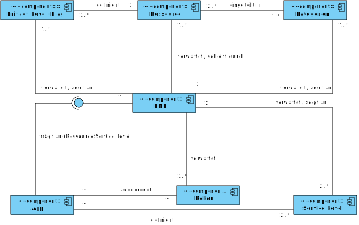

Entwicklungsstrategien
Wir sind ein Team junger Softwareentwickler, die es sich zum Ziel gesetzt haben gute und besonders benutzerfreundliche Software zu entwickeln. Dabei soll die Beziehung mit dem Kunden stark gepflegt werden und dieser aktiv mit in die Entwicklung einbezogen werden.
Die Software soll während der Entwicklung in einzelnen Iterationen stückweise entstehen. Dabei soll nach jeder Iteration eine lauffähige Version zur Verfügung stehen, die den aktuellen Fortschritt veranschaulichen soll.
Es wird selbstverständlich darauf geachtet, dass nicht nur eine lauffähige Version entsteht, sondern auch eine möglichst fehlerfreie und inutitiv bedienbare Software.
Auch für die zukünftigen Entwickler, die mit dem Produkt arbeiten werden, soll eine gute, leicht zu verstehende Schnittstelle geschaffen werden.
Zu entwickelnde Software
Metamodell
Das Metamodell soll die grundlegende Struktur der zu entwickelnden Software veranschaulichen.
Die PMP soll eine Schnittstelle zwischen Ressourcen und Apps, die die Ressourcen benutzen wollen, darstellen. Dabei regisitrieren sich Ressourcen an PMP um dort für andere Apps zur Verfügung zu stehen.
Ressourcengruppen bieten zu den Angebotenen Daten sog. "Privacy Levels", auch Flags genannt. Diese Flags definieren mögliche Detailgrade der Daten und/oder Operationen auf den Daten.
Eine Ressourcengruppe kann aus mehreren Ressourcen bestehen, die alle in einer Ressourcengruppe definiert werden. Der Nutzer von PMP bekommt von dieser Gruppierung nichts mit.
Apps können Ressourcen benutzen, dazu müssen sie für die Verwendung einer Ressource erstmals PMP fragen, ob sie die Ressourcengruppe benutzen dürfen, denn PMP verwaltet den Zugriff auf diese.
Apps definieren sog. "Service Level", eine App bietet für einen Service Level eine definierte Funktionalität, welche sich je nach Service Level unterscheidet.
Ein Service Level fordert für bestimmte Ressourcengruppen Mindestanforderungen an die zugehörigen, gesetzten Flags.
Eine Rolle beinhaltet bestimmte Flags für Ressourcengruppen, solche Rollen werden Apps zugewiesen. Eine App kann beliebig viele Rollen angehören. Rechte der Rollen werden additiv zusammgenfasst.
Eine App kann bei der Initalisierung bereits eigene Rollen mitbringen die der Nutzer auf seinem Gerät installieren kann.
Der Nutzer kann selbständig eigene Rollen definieren und diese einer App zuweisen. Dadurch erlangt die App Rechte an Ressourcen und kann somit auch ein bestimmtes Service Level erreichen.
Ein nicht versierter Benutzer kann auch einfach den gewünschten Service Level auswählen und automatisch eine passende Rolle erstellen lassen.
Eine Rolle kann kontext-sensitiv sein, das bedeutet, dass eine Rolle nur aktiv ist (also deren beeinhaltete Flags) nur von einer App nutzbar sind, wenn der Kontext in dem sich das Gerät befindet mit dem für die Rolle definierten Kontext übereinstimmt.
Kontext-senstiv kann sich auch direkt auf eine Flag in einer Rolle beziehen um so nur Teile einer Rolle kontext-sensitiv zu machen.
Die Kontextdaten werden von Ressourcen bezogen, so kann Beispielsweise die "Geschwindigkeit unter 100km/h durch eine GPS-Ortungs-Ressource" als Kontext für die Rolle "Routenaufzeichnung" verwendet werden. Das heißt, dass die Rolle "Routenaufzeichnung" nur verwendet werden kann, wenn der Kontext "Geschwindigkeit unter 100km/h" erfüllt wird.
Ressourcen sind eine Art von Plugin, sollten sie z.B. eine Art von Flags definieren die PMP nicht kennt, so wird der Ressource die Möglichkeit gegeben diese selber darzutellen. Das gleiche gilt für neue, PMP unbekannte Kontexten.
Standards
- Es wird bei Java-Code darauf geachtet den Java-Style-Guide von Sun/Oracle einzuhalten.
Dafür gibt es auch extra einen Qualitätssicherungs-Beauftragten im Team - In jeder Iteration entsteht, neben Software und Handbuch, auch eine Spezifikation.
Allgemeine Resultate
Nachfolgend genannte Resultate werden bei jeder durchgeführten Iteration erzielt.
Nichtfunktionale Anforderungen
Einfache Bedienbarkeit:
Bei der Auslegung der Benutzeroberfläche wird durch Hinzufügen des einfachen
Modus dafür gesorgt, dass die PMP von den Anwendern ohne weitere Einweisungen
bedienbar ist. Ebenso wird darauf geachtet, dass es Programmierern mit Hilfe
des Handbuchs möglich ist, auf einfache Weise eigene Service-Levels zu definieren,
weitere Ressourcen zu erstellen und in die PMP zu integrieren.
Erscheinungsbild:
Die Benutzeroberfläche des Systems wird so erstellt, dass sie dem Schema
der Android-Plattform folgt (d.h. gleiche Farbschemen und Schriften).
Reaktionszeiten:
Bei den Reaktionszeiten wird darauf geachtet, dass sie auf einem Niveau liegen,
das eine interaktive und flüssige Bedienung ermöglicht. Sollte sich eine
länger dauernde Verzögerung nicht vermeiden lassen, so wird der Benutzer
durch eine entsprechende Meldung (z.B. Ladebalken) hierüber informiert.
Funktionale Anforderungen
Betriebssystem:
Bei der Entwicklung des Systems wird auf eine Funktionsfähigkeit
auf den vom Kunden bereitsgestellten Geräten geachtet. Das System wird somit
so entwickelt, dass es auf allen Geräten, auf denen Android in der Version
2.1.1 installiert ist, lauffähig ist.
Es wird großer Wert darauf gelegt, dass für die Installation und Ausführung
der PMP keine Änderungen am Betriebssystem der Geräten erforderlich werden.
Handbuch:
Um die Benutzer beim Umgang mit der PMP zu unterstützen, liegt dem System
ein auf deutsch verfasstes Handbuch bei. Das Handbuch wird mit den in der
jeweiligen Iteration hinzugefügten Funktionen (d.h. der Spezifikation)
konsistent gehalten, um stets den aktuellen Funktionsumfang abzudecken.
Auf eine gute Verständlichkeit wird geachtet, um sowohl den Laien als
auch den erfahrenen Benutzer oder Programm-Entwickler effektiv zu unterstützen.
Resultate der ersten Iteration
Nachfolgende Funktionen werden während der ersten Iteration bearbeitet.
Benutzeroberfläche:
Innerhalb der ersten Iteration wird der einfache, auf den unerfahrenen Benutzer
zugeschnittene Modus erstellt. Um die Verwendbarkeit der Benutzeroberfläche
sicherzustellen werden alle Elemente der Benutzeroberfläche (Schaltfläche, Eingabebereiche, etc.)
mit einer Aktion versehen, sobald diese implementiert ist.
Bei der Gestaltung und Implementierung der Benutzeroberfläche wird
darauf geachtet, dass in folgenden Iterationen ein Hinzufügen weiterer Elemente
und ein Erweitern der Benutzeroberfläche (wie etwa das Hinzufügen des
erweiterten Modus) leicht und ohne größere Anpassungen möglich ist.
Die Beschriftung der Elemente erfolgt in englischer Sprache. Durch
Auslagern der Sprach-Daten in externe Ressourcen ist das Berarbeiten
und Hinzufügen von Sprachen jederzeit ohne Änderungen am Programmcode möglich.
Ressourcen-Management:
Innerhalb der ersten Iteration werden die Grund-Architektur und die
Grundfunktionen des Ressourcen-Managers ausgearbeitet und implementiert.
Hierbei wird darauf geachtet, dass sich Ressourcen ohne Anpassungen
des Programmcodes des Ressourcen-Managers hinzufügen, entfernen und aktualisieren lassen. Der
Ressourcen-Manager wird also unabhängig von den konkreten Ressourcen gehalten.
Um die Funktionalität des Ressourcen-Managers testen und demonstrieren zu
können, wird eine einfache Ressource (etwa zum Zugriff auf einen
Eintrag des Telefonbuchs) und eine einfache Demo-App erstellt.
Service-Levels:
Das Hinzufügen von Service-Levels zu einer App erfolgt ohne Änderungen
am Programmcode der PMP.
Auf ein einfaches Definieren der Service-Level wird geachtet (etwa
durch Verwendung eines standardisierten Formats).
Resultate späterer Iterationen
Experten-Modus:
Der Experten-Modus wird hinzugefügt, um Zugriff auf alle Funktionen der
PMP zu ermöglichen.
Import und Export der Einstellungen:
Alle vorgenommene Einstellungen lassen sich leicht in eine Datei
exportieren, um sie auf ein anderes Gerät (oder später auf dasselbe
Gerät) wiederherstellen (importieren) zu können.
Ressourcen und Demo-Apps:
Es werden weitere Ressourcen erstellt und bestehende erweitert.
Dabei wird darauf geachtet Standard-Ressourcen zu erstellen, von denen
erwartet wird, dass sie von vielen weiteren Apps
benötigt werden. Auf die neuen bzw. erweiterten Ressourcen kann durch zusätzliche Demo-Apps
zugegriffen werden. Bestehende Apps werden erweitert, damit sie von
den neuen Funktionen der Ressourcen Gebrauch machen.
In einem Abschnitt der Benutzeroberfläche der PMP werden dem Benutzer
alle installierten Ressourcen aufgelistet. Mit Hilfe dieser Benutzeroberläche
ist es dem Benutzer auch möglich, Ressourcen zu deinstallieren, also zu entfernen.
Service-Levels:
Wurde eine App gestartet, die Zugriff auf eine geschützte Ressource
verlangt, werden dem Benutzer alle von dieser App angebotenen oder
unterstützten Service-Level auf einer übersichtlichen Benutzeroberfläche
angezeigt. Innerhalb dieser Benutzeroberfläche wird durch eine Funktion
angezeigt, auf welche Ressource die App durch Auswahl dieses Service-Levels
Zugriff erhält und welche Funktionen sie hierfür anbietet.
Dem Benutzer wird ein einfaches Abschätzen des Verhältnisses zwischen
dem durch die App angebotenen Dienste (die Services) und den hierfür
benötigten Ressourcen ermöglicht.
Um die PMP besser demonstrieren und testen zu können werden
einige weitere Service-Levels und zugehörige Demo-Apps erstellt.
Zeitplan des Projekts
Die Nummer eines Meilenstein setzt sich aus der Nummer der Iteration und einer laufenden Nummer der Meilensteine innerhalb einer Iteration zusammen. Die Vorprojektphase wird als 0. Iteration geführt.
M-2.3 bezeichnet beispielsweise den dritten Meilenstein in der zweiten Iteration.
| Nr. | Termin | Produkte für den Kunden |
|---|---|---|
| M-0.1 | 05.08.2011 | Angebotsdokument und Projektplan |
| M-1.2 | 20.08.2011 | Spezifikationsdokument |
| M-1.7 | 30.09.2011 | Software, Quellcode, Handbuch, Systemtestprotokoll |
| M-2.2 | KW 43, 2011 | Spezifikationsdokument |
| M-2.7 | KW 48, 2011 | Software, Quellcode, Handbuch, Systemtestprotokoll |
| M-3.2 | KW 51, 2011 | Spezifikationsdokument |
| M-3.7 | KW 04, 2012 | Software, Quellcode, Handbuch, Systemtestprotokoll |
| M-4.2 | KW 08, 2012 | Spezifikationsdokument |
| M-4.7 | KW 13, 2012 | Software, Quellcode, Handbuch, Systemtestprotokoll |
| M-5.2 | KW 16, 2012 | Spezifikationsdokument |
| M-5.7 | KW 21, 2012 | Software, Quellcode, Handbuch, Systemtestprotokoll |
Aufwands- und Kostenschätzung
Für das Projekt, aufgeteilt in fünf Iterationen, sind insgesamt 10 Entwickler á 450 Arbeitsstunden vorgesehen.
Zusammen ergibt das einen Gesamtaufwand von 4.500 Entwicklerstunden. Eine Entwicklerstunde wird mit € 100,- berechnet.
Daraus folgen die Gesamtkosten in Höhe von € 450.000,-.
Das Vorprojekt wird auf 250 Entwicklerstunden, d.h. € 25.000,- disponiert. Für jede der insgesamt fünf Iterationen
stehen 850 Entwicklerstunden, d.h. € 85.000,-, zur Verfügung.
Geschätzter Arbeitsanteil der Meilensteine einer Iteration:
| Nr. | Name des Meilensteins | Arbeitsanteil | Entwicklerstunden | Kosten |
|---|---|---|---|---|
| M-x.1 | Spezifikation, Modelleriung, Prototyp | 16% | 136 | € 13.600,- |
| M-x.2 | Spezifikationsreview/-korrektur | 4% | 34 | € 3.400,- |
| M-x.3 | Entwurf | 10% | 85 | € 8.500,- |
| M-x.4 | Implementierung, Modultest, Integration | 60% | 510 | € 51.000,- |
| M-x.5 | Handbuch | 3% | 25,5 | € 2550,- |
| M-x.6 | Systemtest/-korrektur | 6% | 51 | € 5.100,- |
| M-x.7 | Abnahme | 1% | 8,5 | € 850,- |
| Summe: | 100% | 850 | € 85.000,- | |
Kontaktpersonen
Der erste Ansprechpartner für den Auftraggeber ist der Projektleiter. Sollte dieser in Ausnahmefällen nicht verfügbar sein, so tritt der Stellv. Projektleiter an seine Stelle.
Projektleiter
| Name: | Marcus Vetter Narzissenstraße 29 D-70771 Leinfelden-Echterdingen |
|---|---|
| E-Mail: | vetterms@studi.informatik.uni-stutgart.de |
Stellv. Projektleiter
| Name: | Jakob Jarosch Laubengasse 7 D-72664 Kohlberg |
|---|---|
| E-Mail: | jaroscjb@studi.informatik.uni-stuttgart.de |
Projektteam
| Name | |
|---|---|
| Berberich, Thorsten | swt77178@studmail.uni-stuttgart.de |
| Huynh, Hai Dang | huynhhi@studi.informatik.uni-stuttgart.de |
| Jarosch, Jakob | jaroscjb@studi.informatik.uni-stuttgart.de |
| Kuhn, Tobias | kuhnts@studi.informatik.uni-stuttgart.de |
| Makarov, Anton | makaroan@studi.informatik.uni-stuttgart.de |
| Nguyen, Andre Bach | swt77060@stud.uni-stuttgart.de |
| Schüler, Frieder | schuelfr@studi.informatik.uni-stuttgart.de |
| Strobel, Patrick | strobepk@studi.informatik.uni-stuttgart.de |
| Vetter, Marcus | swt75342@stud.uni-stuttgart.de |
| Alexander Wassilijew | wassilar@studi.informatik.uni-stuttgart.de |